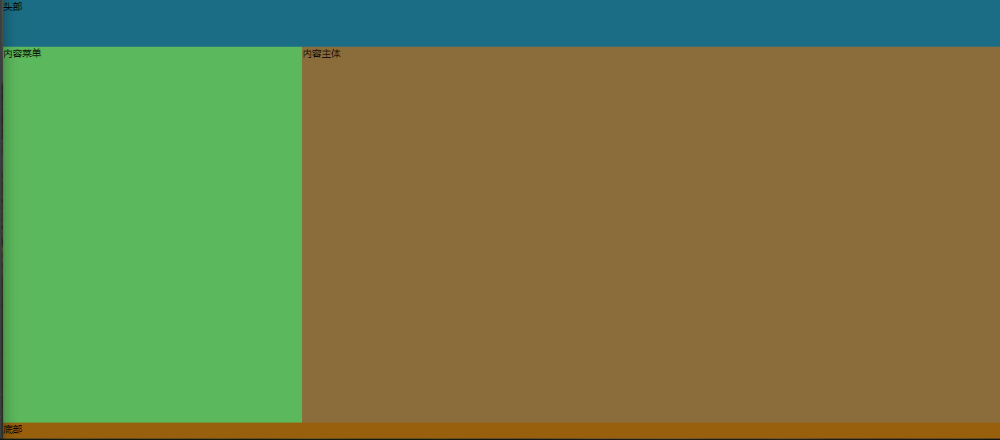
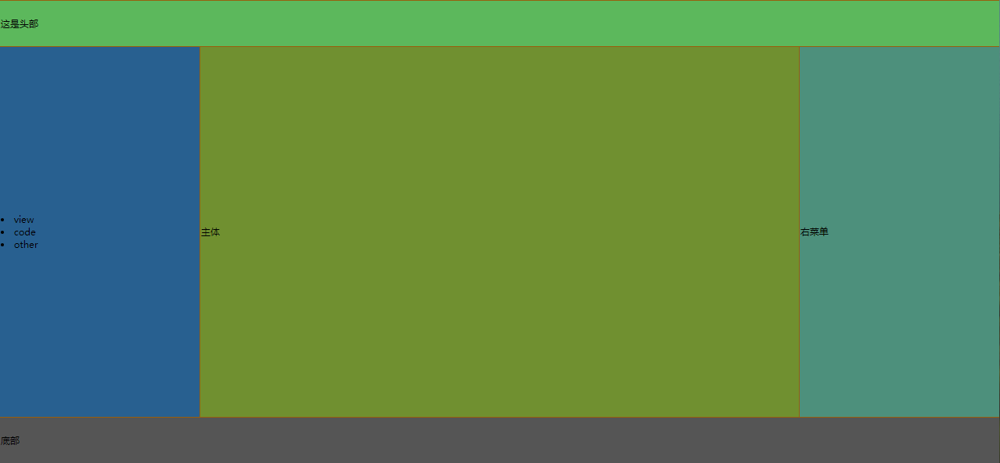
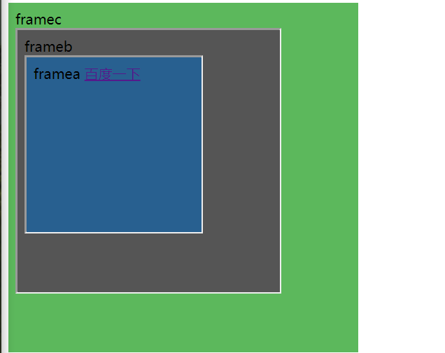
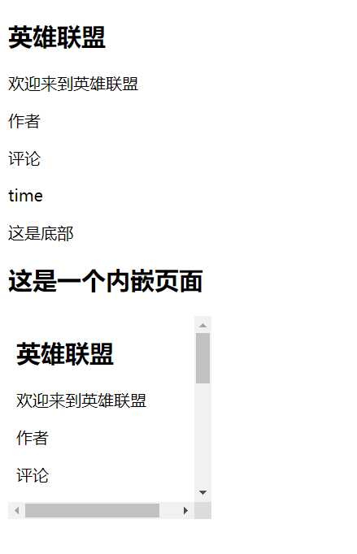
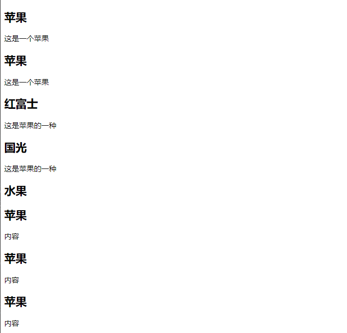

datetime:2019/7/1 9:43
author:nzb
HTML5元素
- 元素指的是从开始标签到结束标签的所有代码
| 开始标签 | 元素内容 | 结束标签 |
|---|---|---|
<p> |
this is my web page | </P> |
<br /> |
HTML元素语法：
- 元素的内容是开始标签与结束标签之间的内容
- 空元素在开始标签进行关闭
- 大多数HTML元素拥有属性
嵌套HTML元素
HTML5属性使用方法
标签可以拥有属性为元素提供更多的信息
属性以键值对的形式出现。 如：href="www.baidu.com"
常用标签属性：
<h1>:align对齐方式<body>:bgcolor背景颜色<a>:target规定在何处打开链接
通用属性
- class：规定元素的类名
- id：规定元素唯一id
- style：规定元素的样式
- title：规定元素的额外信息
HTML5格式化
| 标签 | 描述 |
|---|---|
<b> |
定义粗体文本 |
<big> |
定义大号字,在HTML5取消采用CSS代替 |
<em> |
定义着重文字 |
<i> |
定义斜体字 |
<small> |
定义小号字 |
<strong> |
定义加重语气 |
<sub> |
定义下标字 |
<sup> |
定义上标字 |
<ins> |
定义插入字 |
<del> |
定义删除字 |
HTML5样式
标签：
<style>：样式定义<link>：资源引用
属性：
- rel="stylesheet"：外部样式表
- type="text/css"：引入文档的类型
- margin-left：边距
三种样式表插入方法：
- 外部样式表：
<link rel="stylesheet" type="text/css" href="mystyle.css"> 内部样式表：
<style type="text/css"> body{background-color: red} p{margin-left: 20px;} </style>内联样式表：
<p style="color: red;"></p>
- 外部样式表：
HTML5链接
链接数据：
- 文本链接
- 图片链接
属性：
- href属性：指向另一个文档的链接
- name属性：创建文档内的链接
img标签属性：
- alt：替换文本属性
- width：宽
- height：高
HTML5表格
| 标签 | 描述 |
|---|---|
<table> |
定义表格 |
<caption> |
定义表格标题 |
<th> |
定义表格的表头 |
<tr> |
定义表格的行 |
<td> |
定义表格的单元 |
<thead> |
定义表格的页眉 |
<tbody> |
定义表格的主体 |
<tfoot> |
定义表格的页脚 |
<col> |
定义表格的列属性 |
- 没有边框的表格：不加border属性
- 表格中的表头：
<tr><th>表头</th></tr> - 空单元格：不书写内容即可
- 带有标题的表格：
<caption>标题</caption> - 表格内的标签：
<tr> <td>单元4</td> <td>单元5</td> <td> <ul> <li>苹果</li> <li>香蕉</li> <li>桃子</li> </ul> </td> </tr> - 单元格边距：cellpadding="20"
- 单元格间距：cellspacing="10"
- 表格内背景颜色和图像：bgcolor="red"
HTML5列表
| 标签 | 描述 |
|---|---|
<ol> |
有序列表 |
<ul> |
无序列表 |
<li> |
列表项 |
<dl> |
列表 |
<dt> |
列表项 |
<dd> |
描述 |
无序列表
- 使用标签：
<ul>、<li> - 属性：
disc、circle、square
- 使用标签：
有序列表
- 使用标签：
<ol>、<li> - 属性：
A、a、I、i、start
- 使用标签：
嵌套列表
- 使用标签：
<ul>、<ol>、<li>
- 使用标签：
自定义列表
- 使用标签：
<dl>、<dt>、<dd>
- 使用标签：
HTML5块
HTML块元素
- 块元素在显示时，通常会以新行开始。
如：
<h1>、<p>、<ul>
- 块元素在显示时，通常会以新行开始。
如：
HTML内联元素
- 内联元素通常不会以新行开始。
如：
<b>、<a>、<img>
- 内联元素通常不会以新行开始。
如：
HTML
<div>元素<div>元素也被称为块元素，其主要是组合HTML元素的容器
HTML
<span>元素<span>元素是内联元素，可作为文本的容器
HTML5布局
使用
<div>元素布局 <!DOCTYPE html> <html lang="en"> <head> <meta charset="UTF-8"> <title>div布局</title> <style> body{ margin: 0px; } #container{ width: 100%; height: 950px; background-color: gray; } #heading{ width: 100%; height: 10%; background-color: #1b6d85; } #content_menu{ width: 30%; height: 80%; background-color: #5cb85c; /*从左到右浮动*/ float: left; } #content_body{ width: 70%; height: 80%; background-color: #8a6d3b; float: left; } #footing{ width: 100%; height: 10%; background-color: #985f0d; /*清除浮动*/ clear: both; } </style> </head> <body> <div id="container"> <div id="heading">头部</div> <div id="content_menu">内容菜单</div> <div id="content_body">内容主体</div> <div id="footing">底部</div> </div> </body> </html>使用
<table>元素布局 <!DOCTYPE html> <html lang="en"> <head> <meta charset="UTF-8"> <title>table布局</title> </head> <body style="margin: 0px"> <table width="100%" height="950px" style="background-color: #985f0d"> <tr> <!--colspan="3"就是合并单元格，3个合成1个--> <td colspan="3" width="100%" height="10%" style="background-color: #5cb85c">这是头部</td> </tr> <tr> <td width="20%" height="80%" style="background-color: #286090"> <ur> <li>view</li> <li>code</li> <li>other</li> </ur> </td> <td width="60%" height="80%" style="background-color: #709030">主体</td> <td width="20%" height="80%" style="background-color: #4d907c">右菜单</td> </tr> <tr> <td width="100%" height="10%" colspan="3" style="background-color: #555555">底部</td> </tr> </table> </body> </html>
HTML5表单
- 表单用于获取不同类型的用户输入
- 常用表单标签
<form> |
表单 |
<input> |
输入域 |
<textarea> |
文本域 |
<label> |
控制标签 |
<fieldset> |
定义域 |
<legend> |
域的标题 |
<select> |
选择列表 |
<optgroup> |
选项组 |
<option> |
下拉列表中的选项 |
<button> |
按钮 |
HTML5框架
框架标签(frame):(HTML5已过时)
- 框架对于页面的设计有着很大的作用
框架集标签(
<frameset>):(HTML5中已过时)- 框架集标签定义如何将窗口分隔为框架
- 每一个frameset定义一系列行或列
- rows/cols的值规定了每行或每列占据屏幕的面积
常用标签：
- noresize：固定框架大小
- cols：列
- rows：行
内联框架(HTML5主要使用的)
- iframe
- target属性：
- _self：当前frame打开
- _blank：新窗口打开
- _parent：父级frame打开
- _top：当前窗口打开
- target属性：
- iframe
frame.html
<!DOCTYPE html>
<html lang="en">
<head>
<meta charset="UTF-8">
<title>frame</title>
</head>
<body>
<!--<a href="https://www.baidu.com" target="">百度</a>-->
<br/>
<iframe src="framec.html" frameborder="0" width="400px" height="400px">
</iframe>
</body>
</html>
framea.html
<!DOCTYPE html>
<html lang="en">
<head>
<meta charset="UTF-8">
<title>Title</title>
</head>
<body style="background-color: #286090">
framea
<a href="https://www.baidu.com" target="_top">百度一下</a>
<!--<iframe src="framec.html"></iframe>-->
</body>
</html>
frameb.html
<!DOCTYPE html>
<html lang="en">
<head>
<meta charset="UTF-8">
<title>Title</title>
</head>
<body style="background-color: #555555">
frameb
<br/>
<iframe src="framea.html" width="200px" height="200px"></iframe>
</body>
</html>
framec.html
<!DOCTYPE html>
<html lang="en">
<head>
<meta charset="UTF-8">
<title>Title</title>
</head>
<body style="background-color: #5cb85c">
framec
<br/>
<iframe src="frameb.html" width="300px" height="300px"></iframe>
</body>
</html>

HTML5背景
背景标签：
- Background
背景颜色
- Bgcolor
颜色：
- 颜色是由一个十六进制符号来定义，这个符号由红色、蓝色和绿色的值组成(RGB)
- 颜色值最小值：0(#00)
- 颜色值最大值：255(#FF)
- 红色：#FF0000
- 绿色：#00FF00
- 蓝色：#0000FF
HTML5实体
- 实体
- HTML中预留字符串必须被替换成字符实体。如：
<、>、&
- HTML中预留字符串必须被替换成字符实体。如：
XHTML的规范化
什么是XHTML?
- XHTML指的是可扩展超文本标记语言
- XHTML与HTML4.01几乎是相同的
- XHTML是更严格更纯净的HTML版本
- XHTML是以XML应用的方式定义的HTML
- XHTML得到所有主流浏览器的支持
为什么使用XHTML?
- 为了代码的完整性和良好性
文档声明：
- DTD：规定了使用通用标记语言的网页语法
三种XHTML文档类型
- STRICT(严格类型)
- TRANSITIONAL(过度类型)
- FRAMESET(框架类型)
XHTML元素语法：
- XHTML元素必须嵌套
- XHTML元素必须始终关闭
- XHTML元素必须小写
- XHTML文档必须有一个根元素
XHTML属性语法规则：
- XHTML属性必须使用小写
- XHTML属性值必须用引号包围
- XHTML属性最小化也是禁止的
HTML5新特性
- 引入原生多媒体支持（audio和video标签）
- 视频格式和播放器
- 视频托管服务
- 添加视频的准备工作
- video标签和属性 - autoplay / controls / loop / muted / preload / src
- audio标签和属性 - autoplay / controls / loop / muted / preload / src / width / height / poster
- 引入可编程内容（canvas标签）
- 引入语义Web（article、aside、details、figure、footer、header、nav、section、summary等标签）
- 引入新的表单控件（日历、邮箱、搜索、滑条等）
- 引入对离线存储更好的支持（localStorage和sessionStorage）
- 引入对定位、拖放、WebSocket、后台任务等的支持
HTML5新增的主体结构元素
- article元素
- article元素代表文档、页面或应用程序中独立的、完整的、可以独立被外部引用的内容。它可以是一篇博客或者报刊中的一篇文章，一篇论坛帖子、一段用户评论或独立的插件，或其他任何独立的内容。
- article元素可以嵌套使用，也可以用来表示插件。

<!DOCTYPE html>
<html lang="en">
<head>
<meta charset="UTF-8">
<title>article元素</title>
</head>
<body>
<article>
<header>
<h1>英雄联盟</h1>
<p>欢迎来到英雄联盟</p>
</header>
<article>
<header>作者</header>
<p>评论</p>
<footer>time</footer>
</article>
<footer>
<p>这是底部</p>
</footer>
</article>
<article>
<h1>这是一个内嵌页面</h1>
<object>
<embed src="#" width="200" height="200">
</object>
</article>
</body>
</html>
- section元素
- section元素用于对网站或应用程序中页面上的内容进行分块。一个section元素通常由其内容及标题组成。但section元素并非一个普通的容器元素；当一个容器需要被直接定义样式或通过脚本定义行为时，推荐使用div而非section元素。

<!DOCTYPE html>
<html lang="en">
<head>
<meta charset="UTF-8">
<title>section元素</title>
</head>
<body>
<section>
<h1>苹果</h1>
<p>这是一个苹果</p>
</section>
<article>
<h1>苹果</h1>
<p>这是一个苹果</p>
<section>
<h2>红富士</h2>
<p>这是苹果的一种</p>
</section>
<section>
<h2>国光</h2>
<p>这是苹果的一种</p>
</section>
</article>
<section>
<h1>水果</h1>
<article>
<h2>苹果</h2>
<p>内容</p>
</article>
<article>
<h2>苹果</h2>
<p>内容</p>
</article>
<article>
<h2>苹果</h2>
<p>内容</p>
</article>
</section>
</body>
</html>
section与article的区别 section的作用强调对文章或页面进行分段、分块，而article元素强调独立性
section使用总结：1、不要将section元素作为设置样式的页面容器，那是div的工作。2、如果使用article、aside、nav元素更符合使用条件，那就不要使用section元素。3、没有标题内容，不要使用section元素。
nav元素
- nav元素是一个可以用作页面导航的连接组，其中的导航元素链接到其他页面或当前页面的其他部分。并不是所有的连接组都要被放进nav元素，只需要将主要的、基本的连接组放进nav元素即可。nav的应用场景：传统导航栏、侧边导航栏、页内导航、翻页操作。
<!DOCTYPE html> <html lang="en"> <head> <meta charset="UTF-8"> <title>nav元素</title> </head> <body> <nav> <ul> <li><a href="#">主页</a></li> <li><a href="#">开发文档</a></li> </ul> </nav> <article> <header> <h1>html5与css3的历史</h1> <nav> <ul> <li><a href="#">html5历史</a></li> <li><a href="#">css3历史</a></li> </ul> </nav> </header> <section> <h1>css3的历史</h1> <p>...</p> </section> <footer> <a href="#">删除</a> <a href="#">修改</a> </footer> </article> <footer> <p><small>版权声明</small></p> </footer> </body> </html>
- nav元素是一个可以用作页面导航的连接组，其中的导航元素链接到其他页面或当前页面的其他部分。并不是所有的连接组都要被放进nav元素，只需要将主要的、基本的连接组放进nav元素即可。nav的应用场景：传统导航栏、侧边导航栏、页内导航、翻页操作。
aside元素
-aside元素用来表示当前页面或文章的附属信息部分，它可以包含于当前页面或主要内容相关的引用、侧边栏、广告、导航条，以及其他类似的有区别于主要内容的部分。
<!DOCTYPE html> <html lang="en"> <head> <meta charset="UTF-8"> <title>aside元素</title> </head> <body> <!--第一种--> <header> <h1>js入门</h1> </header> <article> <h1>语法</h1> <p>文章的正文。。。</p> <aside> <h1>名词解释</h1> <p>语法：。。。。。。。</p> </aside> </article> <!--第二种--> <aside> <nav> <h2>评论</h2> <ul> <li><a href="#">2019-7-1</a></li> <li><a href="#">好好学习</a></li> </ul> </nav> </aside> </body> </html>time元素和微格式
<!DOCTYPE html> <html lang="en"> <head> <meta charset="UTF-8"> <title>time元素</title> </head> <body> <time datetime="2019-7-1">2019-7-1</time> <time datetime="2019-7-1T20:00">2019-7-1</time> <time datetime="2019-7-1T20:00Z">2019-7-1</time> <time datetime="2019-7-1T20:00+09:00">2019-7-1</time> <article> <header> <h1>苹果</h1> <p>发布时间 <time datetime="2019-7-1" pubdate>2019-7-1</time> </p> <p>舞会事件 <time datetime="2019-7-2">2019-7-2</time> </p> </header> </article> </body> </html>
HTML5新增的非主体结构元素
header元素
Header元素是一种具有引导和导航作用的结构元素，通常放置整个页面或页面内的一个内容区域的标题，但是也可以包含其他内容列如数据表格，搜索表单或相关Logo图片！
<!DOCTYPE html> <html lang="en"> <head> <meta charset="UTF-8"> <title>header元素</title> </head> <body> <header> <h1>it最新技术</h1> <a href="http://www.baidu.com"></a> </header> <nav> <ul> <li><a href="#">信息</a> </li> <li><a href="#">信息1</a> </li> <li><a href="#">信息2</a> </li> </ul> </nav> </body> </html>footer元素
footer元素可作为上层父级内容区块或是一个根区块的脚注。footer通常包括相关区块的脚注信息，如作者，相关阅读连接及其版权信息等。
<!DOCTYPE html> <html lang="en"> <head> <meta charset="UTF-8"> <title>footer元素</title> </head> <body> <!--<div class="footer">--> <footer> <ul> <li><a href="#">版权信息</a></li> <li><a href="#">版权信息</a></li> <li><a href="#">版权信息</a></li> <li><a href="#">版权信息</a></li> </ul> </footer> <!--</div>--> <article> <footer> 这是文章的底部 </footer> </article> <section> <footer> 这是块底部 </footer> </section> </body> </html>hgroup元素(已废除)
- hgroup元素是将标题及其子标题进行分组的元素。
- hgroup元素通常被分为H1~H6元素进行分组，如一个内容区块的标题及其子元素算一组。
<!DOCTYPE html> <html lang="en"> <head> <meta charset="UTF-8"> <title>hgroup元素</title> </head> <body> <article> <header> <hgroup> <h1>这是文章标题</h1> <h2>这是一个子标题</h2> </hgroup> <p><time datetime="2019-7-1">2019-7-1</time></p> </header> <div> 这是内容 </div> <footer> 这是底部 </footer> </article> </body> </html>
address元素
address元素用来存放文档中呈现的联系信息，文档作者，等等的名字 网站链接 电子邮箱 真实地址 电话号码 等
<!DOCTYPE html> <html lang="en"> <head> <meta charset="UTF-8"> <title>address元素</title> </head> <body> <address> <a href="#">a</a> <a href="#">b</a> </address> <footer> <div> <address> <a href="#">c</a> 百度一下 </address> <time datetime="2019-7-1">2019-7-1</time> </div> </footer> </body> </html>网页编排规则
<body> <!-- 网页标题 --> <header> <h1>网页标题</h1> <!-- 网站导航链接 --> <nav> <li> <a href="example.html"></a> </li> <li> <a href="example.html"></a> </li> </nav> </header> <!-- 文章正文 --> <article> <hgroup> <h1>文章主标题</h1> <h2>文章子标题</h2> </hgroup> <p>文章正文</p> <!-- 文章评论 --> <section class="comment"> <h1>评论标题</h1> <p>评论正文</p> </section> </article> <!-- 版权信息 --> <footer> <small>版权所有：hawen</small> </footer> </body>
表单新增元素与属性
表单内元素的form属性
在Html4中，表单内的从属元素必须写在表单内部，而在HTML5中，可以把它们书写在页面的任何地方，然后为该元素指定一个form属性，属性值为该表单的id。 这样九可以声明该元素从属于指定表单了。
<form id="myform"> </form> <input type="text" form="myform"/>表单内元素的formaction属性
在HTML4中，一个表单内的所有元素只能通过表单的action属性统一提交到另一个页面，而在HTML5中可以为所有的提交按钮。
<form id="myform" action="Index.aspx"> <input type="submit" value="提交到Index2" formaction="Index2.aspx"/> <input type="submit" value="提交到Index3" formaction="Index3.aspx"/> </form>表单内元素的formmethod属性
在HTML4中，一个表单内只有一个action属性用来对表单内所有元素统一指定提交页面，所以每个表单内也只有一个method属性来统一指定提交方法。 在HTML5中，可以使用formmethod属性来对每个表单元素分别指定不同的提交方法。
<form id="myform" action="Index.aspx"> <input type="submit" value="Post提交" formmethod="POST"/> <input type="submit" value="GET提交" formmethod="GET"/> </form>表单内元素的formenctype属性
在HTML4中，表单元素具有一个enctype属性，该属性用于指定在表单发送到服务器之前应该如何对表单内的数据进行编码。
- application/x-www-from-urlencoded：编码方式把表单数据转换成一个字符串形式?a=value1&b=value2&c=value3,然后把这个字符串价到提交的目标URL地址后面。 该属性为表单enctype属性的默认属性值。
- multipart/form-data:不对字符编码,在使用包含文件上传控件的表单时，必须使用该值。
text/plain:对表单数据中的空格被转换为"+",但不对表单数据中的特殊字符进行编码。
在HTML5中，可以使用formenctype属性对表单元素分别指定不同的编码方式。
<form id="myform" action="Index.aspx" method="Post"> 文件:<input type="file" name="files"/> <input type="submit" value="上传" formenctype="multipart/form-data" formaction="uploadFile.aspx"/> </form>
表单内元素的formtarget属性
在HTML4中，表单元素具有一个target属性，该属性用于指定在何处打开表单提交后，所需要加载的页面。
- _blank:在新的浏览器窗口中打开。
- _self:默认值，在相同的框架中打开。
- _parent:在当前框架的父框架中打开。
- _top:在当前浏览器窗口中打开。
framename:在指定的框架中打开。
在HTML5中，可以对多个提交按钮分别使用formtarget属性来指定提交后在何处打开所需要加载的页面。
<form id="myform" action="Index.aspx"> <input type="submit" name="s1" value="1" formtarget="_bank" formaction="Index2.aspx"/> <input type="submit" name="s2" value="2" formtarget="_top"/> </form>
表单内元素的autofocus属性
文本框、选择框或按钮加上autofocus属性，当页面打开时，该控件自动获取光标焦点。一个页面上只能有一个控件具有autofocus属性。
<input type="text" autofocus />表单内元素的required属性
HTML5中新增的required属性可以应用在大多数输入元素上，在提交时，将验证输入内容是否合法，如果不合法则不允许提交，同时在浏览器显示相应的提示信息。
表单内元素的labels属性
在HTML5中，为所有可使用label的表单元素，定义一个labels属性，属性值为一个NodeList对象，代表该元素所绑定的标签元素构成的集合。
<script type="text/javascript"> var TxtName=document.getElementById("txt_name"); alert(TxtName.labels.length); </script> <form id="myform" action="Index.aspx"> <label id="label1" for="txt_name">名字:</label> <input id="txt_name"> </form>标签的control属性
在HTML5中，可以在标签内部放置一个表单元素，并且通过该标签的control属性来访问该表单元素。
<form action="" method="post"> <label id="label"> 邮编: <input type="text" name="text" value="" maxlength="6"> <small>请输入六位数字</small> </label> <input type="button" value="设置默认值" onclick="setValue()"> </form> <script type="text/javascript"> function setValue(){ var label = document.getElementById('label'); var textbox = label.control; textbox.value='10010'; } </script>文本框的placeholder属性
placeholder是指当文本框处于微输入状态时显示的输入提示。
<input type="text" placeholder="提示输入"/>文本框的list属性
HTML5中,为
<input type="text">增加了一个list属性，该属性的值为某个datalist的id。datalist元素也是HTML5中新增的元素，该元素类似于选择框(Select元素),但是当用户想要设定的值不在选择列表之内时，允许自行输入。 datalist元素本身并不显示，而是当文本框获取焦点时以提示输入的方式显示。
<form> <input type="text" name="seach" list="dataList1"/> <datalist id="dataList1" style="display:none;"> <option value="你好">你好</option> <option value="早上">早上</option> </datalist> </form>文本框的AutoComplete属性
辅助输入所用的自动完成功能，时一个即节省输入时间又十分方便的功能。在HTML5之前，因为谁都可以看见输入的值，所以在安全方面存在缺陷。 对于autocomplete属性，可以指定"on"、"off"与""(不指定)这三种值。在不进行指定时，使用浏览器的默认值。把该属性设为on时， 可以显示指定候补输入的数据列表。使用datalist元素与list属性提供候补输入的数据列表，在执行自动完成时， 可以将该datalist元素中的数据作为候补输入的数据在文本框中自动显示。
<input type="text" autocomplete="on" list="greetings"/>文本框的pattern属性
在HTML5中，对input元素使用pattern属性，并且将属性值设置某个格式的正则表达式时，在提交时会对这些进行检查，检查其内容是否符合给定格式。
<input type="text" pattern="[0-9][a-z]{3}" required="格式不符合"/>文本框的SelectDirection属性
对input 元素和textarea 元素，HTML5增加了SelectionDirection属性。当用户在这两个元素中用户鼠标选取部分文字时， 可以使用属性来获取选取方向。正向选取:forward,反向选取为:backward。
复选框的indeterminate属性
对复选框checkbox元素来说，过去只有选取与非选取两种状态。在HTML5中，可以在Javascript脚本代码中对该元素使用indeterminate属性， 以说明复选框处于"尚未明确是否选取的状态"。indeterminate属性为boolean 类型 当为true 时，浏览器中的复选框将显示为不明状态。 需要注意的时，indeterminate属性与checked属性时两种不同的属性。因此，在判断复选框时，应该现判断indeterminate属性值，然后在判断checked属性值。
<form> <input type="checkbox" indeterminate id="cb"> </form> <script> var cb = document.getElementById('cb'); cb.indeterminate = true; </script>image提交按钮的height属性与width属性
针对类型为image的input元素，HTML5新增了两个属性，height、width分别用来指定图片的高、宽。
<form> <input type="text"> <input type="image" alt="图片" src="static/img/a5.jpg" width="30" height="30"> </form>